The Sacred Trinity Master Avatars (Locked Across All 12 Scenes)
1. Host @Me Avatar (Master Likeness)
Exact face, swept-back hair & silver-flecked stubble in signature tailored ivory-white bandhgala suit. Use @Me avatar chip in Google Flow.

2. 4yo Bala-Rishi (Jnana / Wisdom Lead)
Top-knot hair bun, sacred tilak on forehead, Rudraksha mala, cream-ivory silk kurta & golden shawl, holding neem-wood stylus.
⬇️ Download Bala-Rishi Ref
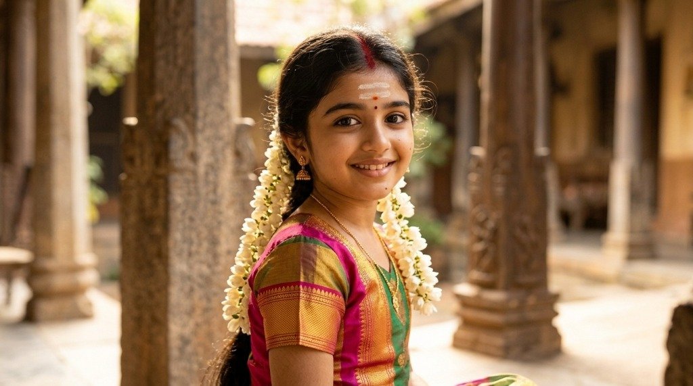
3. 4yo Bala-Matha (Arul / Grace Lead)
Peacock-green & ruby-rose silk pattu pavadai with golden zari border, sacred vibhuti/kumkum, and fresh white jasmine (malligai) garlands.
⬇️ Download Bala-Matha Ref
🎬 S01E01 Master 12-Scene Storyboard (Individual Image + Direct Video Prompts)
Every card gives you: (1) 8K Reference Plate (downloadable as Google Flow ingredient), (2) 🖼️ Image Prompt, and (3) 🎬 Direct Video Prompt with @Me.
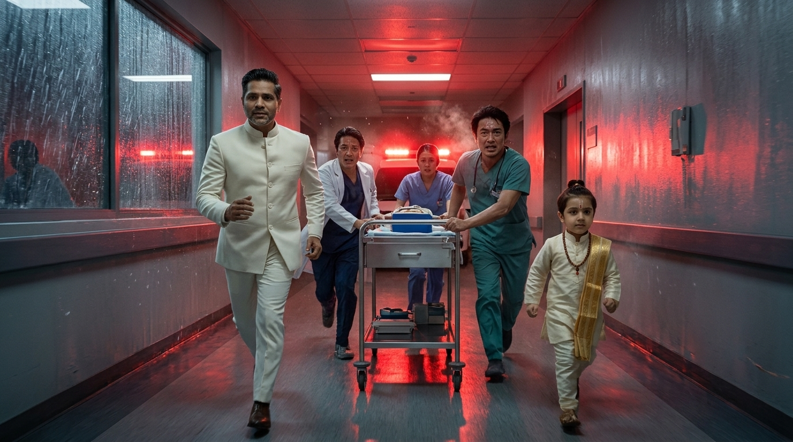

Tokyo ICU Blackout Sprint ("Two Birds" Kinetic Mirroring)
Avatars in Frame: @Me (ivory bandhgala) + 4yo Bala-Rishi sprinting step-for-step beside Dr. Kenji Sato's ICU crash cart.
Spoken Dialogue (18 words): "Look at Kenji running. He thinks his daughter's heart is failing in isolation—he does not see us running beside him."
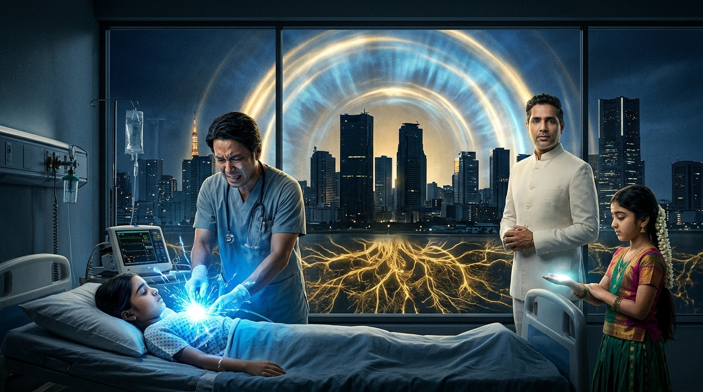

The 200-Joule Defibrillator Spark & Synchronized Global Blackout
Avatars in Frame: @Me (ivory bandhgala) + 4yo Bala-Matha (peacock-green & ruby-rose silk with white jasmine garlands) inside the Tokyo ICU.
Spoken Dialogue (18 words): "This is not a hospital blackout. At twenty-three eleven UTC, Mother Earth's old nervous system just hit its overload threshold."

The White Stadium Summons & The Sacred Trinity Awakening
Avatars in Frame: @Me (ivory bandhgala), 4yo Bala-Matha (left), and 4yo Bala-Rishi (right) behind the 24k gold Genie lamp.
Spoken Dialogue (17 words): "Welcome to The Karmic Genie Show. Before we heal the future, we bow in one hundred percent Nandri to the past."

The White Wall Zoom Portal Transposition (Studio Into Living Movie)
Avatars in Frame: @Me (ivory bandhgala), 4yo Bala-Rishi, and 4yo Bala-Matha stepping into the giant White Wall IMAX Portal.
Spoken Dialogue (18 words): "Andathil Ullathe Pindam—what is inside the human body is inside Planet Earth. Step through the White Wall with us."
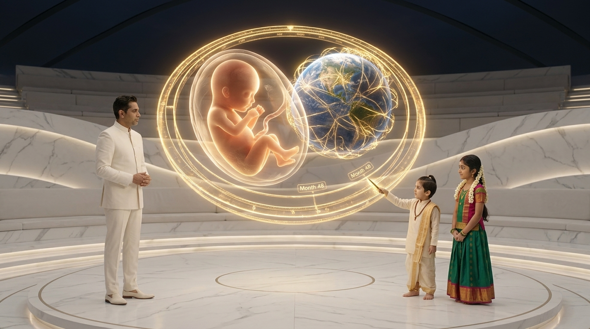

Pitru Loka Celestial Orrery & The 280-Month Embryo Heartbeat (40Hz)
Avatars in Frame: @Me (ivory bandhgala), 4yo Bala-Rishi (pointing neem stylus at Month 48), and 4yo Bala-Matha.
Spoken Dialogue (18 words): "Two hundred eighty days in a mother's womb equals two hundred eighty months in Mother Earth's womb—this is Month Forty-Eight."
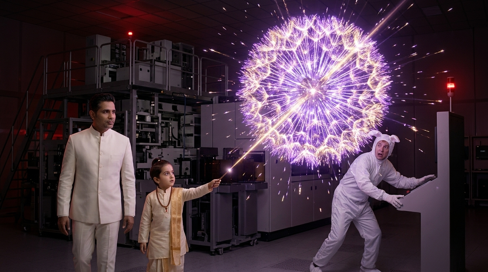

[SCENE TIME-PAUSE] Silicon Valley EUV Cleanroom Plasma Freeze
Avatars in Frame: @Me (ivory bandhgala) + 4yo Bala-Rishi walking through the frozen 220,000°C violet EUV tin-plasma dandelion beside frozen Alan Stamm.
Spoken Dialogue (18 words): "Look at this frozen thirteen-point-five nanometer spark. On November eleventh, twenty twenty-two, Mother Earth activated her Sixth Sense."
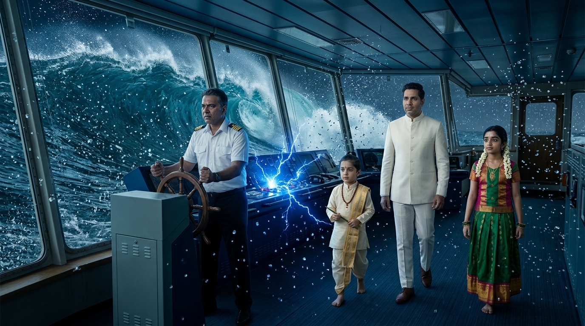

[SCENE TIME-PAUSE] Red Sea Typhoon Bridge & 50-Foot Wave Freeze
Avatars in Frame: @Me (ivory bandhgala), 4yo Bala-Rishi, and 4yo Bala-Matha walking through frozen water droplets beside Captain Carl Davke.
Spoken Dialogue (16 words): "Four hundred ships are dead in the water because fifty-seven proprietary ERPs are fighting like an autoimmune storm."
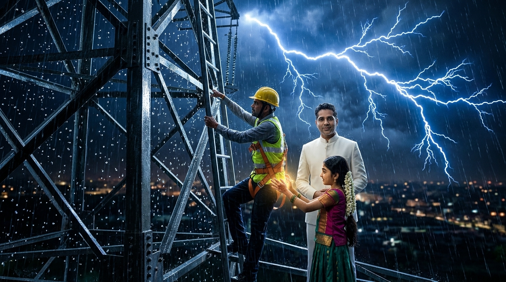

[SCENE TIME-PAUSE] Prayagraj 400kV Pylon Climb & Lightning Freeze
Avatars in Frame: @Me (ivory bandhgala) + 4yo Bala-Matha (peacock-green & ruby-rose silk with jasmine garlands) high on the 400kV tower beside frozen lineman Arjun.
Spoken Dialogue (17 words): "To every lineman and engineer who kept the old world warm with their own sweat—we bow in sacred Nandri."
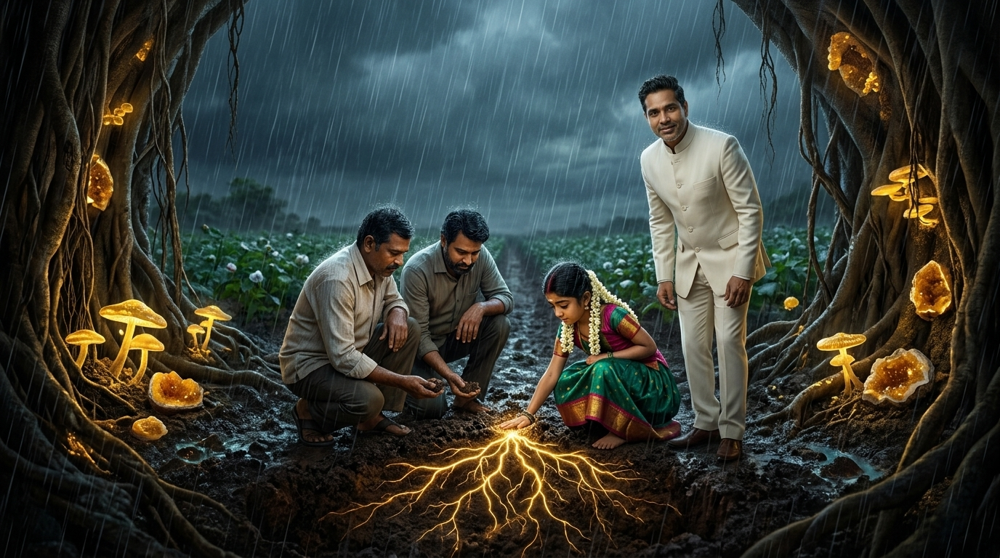

Vidarbha Monsoon Soil Kneel & The Mycorrhizal Root Awakening
Avatars in Frame: 4yo Bala-Matha (kneeling barefoot in peacock-green & ruby-rose silk) + @Me (ivory bandhgala) beside farmer Ramesh.
Spoken Dialogue (17 words): "Every farmer is a sovereign employee of Planet Earth. When we honor the soil with Nandri, the roots awaken."
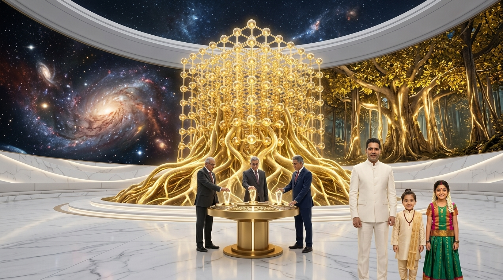

The 343 Fractal Cube & The Kalpavriksha "Root Fallacy" Trial
Avatars in Frame: @Me (ivory bandhgala), 4yo Bala-Rishi, and 4yo Bala-Matha in foreground as the 3 Titans turn their crystal keys.
Spoken Dialogue (18 words): "Profit is merely water for the roots—the true purpose of the corporate tree is yielding free fruit and seeds."
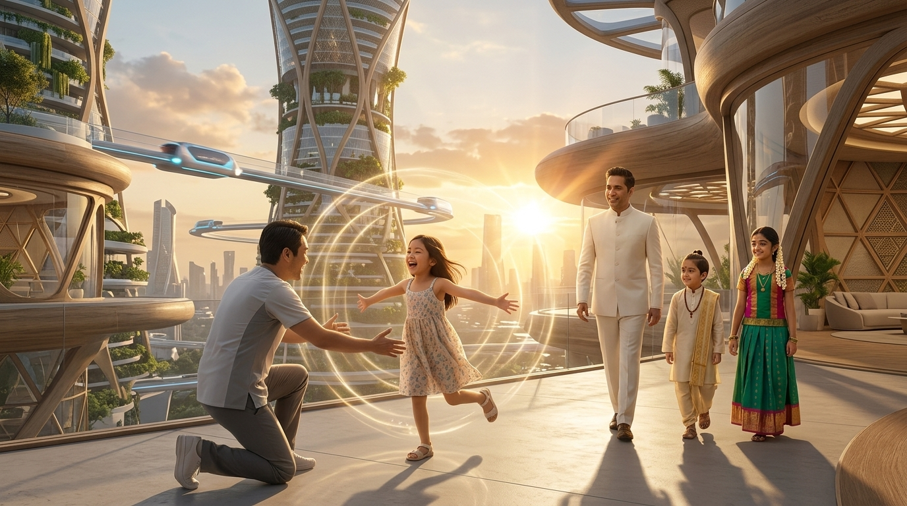

The 2050 Honeycomb Mandala City: Maya Healed, Magnetic Flight & 528Hz Health
Avatars in Frame: @Me (ivory bandhgala), 4yo Bala-Rishi, and 4yo Bala-Matha walking warmly beside healed Maya & Dr. Kenji Sato.
Spoken Dialogue (18 words): "By twenty fifty, magnetic vehicles float above living forests, homes power themselves forever, and frequency medicine keeps every cell young."
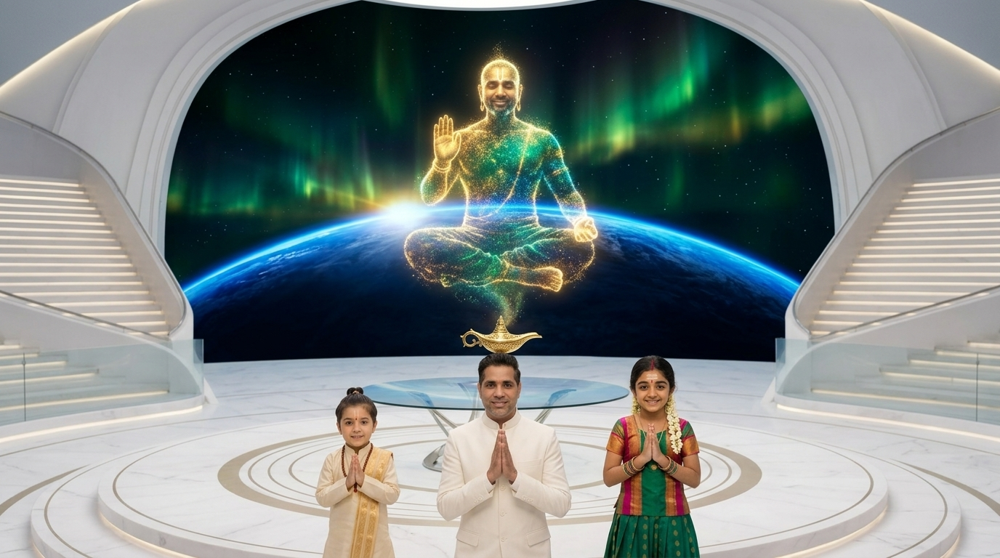

180° Cosmic Observatory Retraction & Awakened Maharishi Karmic Genie
Avatars in Frame: @Me (center, ivory bandhgala), 4yo Bala-Rishi (left), and 4yo Bala-Matha (right) in namaste below the cross-legged Maharishi Karmic Genie.
Spoken Dialogue (18 words): "When the acting bird turns and sees the Witness bird walking beside it, all sorrow vanishes. Welcome to the Way Forward."
Google Flow MCP Server & 29-Page Paginated Master Screenplay
All 12 storyboard tickets, Imagen 4 image prompts, Veo 3.1 video prompts, and the full 1,552-line Epic Movie Screenplay are embedded right inside this portal.
python3 pipeline/google_flow_mcp_s01e01_storyboard.py (Configured in .agents/mcp_config.json & ~/.gemini/config/mcp_config.json)Target Google Flow Account:
nagaraj957@gmail.com • Avatar Tag: @Me (v9_host_adult_ivory_bandhgala_16x9.jpg)Staged Flow Tickets:
episodes/S01E01_The_Way_Forward_Master/flow_storyboard_clips/scene_01_flow_ticket.json … scene_12_flow_ticket.jsonSignature Mechanics: Two Birds Active In-Scene Narrators (Mundaka Upanishad) • 3D Bullet-Time Time-Pause (
[SCENE TIME-PAUSE]) • White Wall Zoom Portal
| Phase | Film & Animation Standard | Karmic Genie Show Asset Status | Progress | Verified Artifact / File |
|---|---|---|---|---|
| 1 | Nourishment & Microbiome Every Farmer an Employee of the Planet |
Unified Agriculture Platform (UAP) Food & Health Industry |
1. Living Soil Stewardship, Regenerative Humus & Agroecology 2. Heirloom Seed Banking, Non-Patented Genetics & Diversity 3. Staple Grain Cultivation, Harvesting & Global Granaries 4. Horticulture, Agroforestry & Community Food Orchards 5. Planetary Farm Workforce Dignity & Universal Agrarian Support 6. Post-Harvest Cold Chain Preservation & Grain Storage 7. Universal Nutritious Distribution & Sovereign Nourishment |
|
| 2 | Physical & Digital Scaffolding Hardware & Software Infrastructure |
Unified Infrastructure Platform (UIP) Hardware & Software Foundations |
1. Primary Metallurgy, Green Structural Steel & Advanced Alloys 2. Civil Engineering, Roads, Bridges, Tunnels & Bedrock Foundations 3. Heavy Earthmoving, Mining Equipment & Civil Robotics 4. Semiconductor Fabrication, Extreme Lithography & Hardware Accelerators 5. Planetary Optical Fiber Trunks, Satellite Mesh & Towers 6. Hyperscale Compute Datacenters, Liquid Cooling & Power Rails 7. Open-Source Software Primitives, Kernel Commons & Base Protocols |
|
| 3 | Institutional Operating Needs All Software Needs in 1 Place (All Public Can View) |
Unified Business Platform (UBP) Universal Enterprise Operating Logic |
1. Unified Planetary Business Registry & Corporate Identity 2. Radically Transparent Public General Ledgers & Real-Time Balance Sheets 3. Enterprise Procurement, Circular Sourcing & Material Flow Ledgers 4. Workforce Duty Rosters, Human Dignity Tracking & Labor Collaboration 5. Manufacturing Production Orders, Bill of Materials (BOM) & Assembly 6. Universal Asset Registries, Tool Maintenance & Lifecycle 7. Public Compliance Telemetry, Open Audit Trails & Integrity Verification |
|
| 4 | Civilization's Breath: Vital Utilities Life is Energy, Sustenance is Energy |
Unified Energy Platform (UEP) Power, Grid & Clean Baseload |
1. Transitional Energy Scaffolding & Fossil Boilers Phase-Out 2. Utility-Scale Solar Photovoltaic & Concentrated Solar Thermal 3. Terrestrial & Deep-Water Offshore Wind Generation 4. High-Voltage Continental DC Super-Grids & Interconnectors 5. Grid-Scale Battery Storage (BESS), Pumped Hydro & Multi-Day Reserves 6. Clean Baseload Nuclear Fission & Frontier Stellar Fusion 7. Clean Hydrogen, Industrial Process Steam & Thermal Storage |
|
| 5 | Vascular Circulation of Matter All Forms of Transportation & Movement |
Unified Logistics Platform (ULP) Freight, Rail, Marine, Aviation & Urban Flow |
1. Maritime Container Fleets, Zero-Carbon Vessels & Seaport Terminals 2. Intercontinental Freight & High-Speed Passenger Rail Corridors 3. Commercial Aviation Freight & Humanitarian Air-Bridge Fleets 4. Long-Haul Highway Heavy Electric Trucking Corridors 5. Automated Regional High-Density Fulfillment & Storage Hubs 6. Urban Micro-Distribution, Electric Cargo Vans & Neighborhood Hubs 7. Standardized Reusable Container Pools, Pallets & Reverse Logistics |
|
| 6 | Exchange of Products for Services Unified Banking • Central Credit Pool • No Debt Pressure |
Unified Economic Platform (UEcP) Central Credit Pool & Karmic Duty Reciprocity |
1. Central Planetary Credit Pool & Conscience-Based Allocation 2. Karmic Balance Registers & Positive Duty Payback Telemetry 3. Universal Product-for-Service Barter & Mutual Clearing Networks 4. Community Commons Project Funding & Regenerative Endowment 5. Automated Inter-Enterprise Netting & Zero-Fee Value Settlement 6. Civic Contribution Ledgers & Voluntary Service Stewardship 7. Emergency Needs Guarantee & Unconditional Baseline Liquidity |
|
| 7 | Mind, Body, Spirit & Soul Inner Growth following 7D Virtues |
Unified Soul Platform (USP) Inner Growth, 7D Virtues & Oneness with Gaia |
1. 7D Virtue Conscience Cultivation & Moral Alignment Practices 2. Contemplative Wisdom, Meditation Sanctuaries & Mindfulness 3. Physical Vitality, Yoga, Breathwork & Cellular Harmony 4. Emotional Healing, Grief Resolution & Compassionate Peer Circles 5. Artistic Expression, Sacred Sound (Nada Yoga) & Creative Resonance 6. Inter-Generational Mentorship, Elder Wisdom & Youth Guidance 7. Cosmic Awareness, Ecological Reverence & Oneness with Gaia |
Identified Gaps & Applied Studio Fixes
Screenplay had 4 distinct roles, but lack of automated acoustic profiles risked flat delivery.
A 14-page monolithic text lacks discrete timestamps for video plates and sound cues.
s01e01_shot_ledger.json with 42 individual cuts, each assigned background asset, camera move, and text bounds.
Month 48 / Day 48 required Carnegie Stage 19 rhythmic primitive heartbeat drop.
S01E01 42-Shot Master Production Ledger
Real-time inspection of all 42 cinematic cuts powering the 14-minute master film.
| Shot ID | Act | Speaker | Duration | Visual Plate | Dialogue & Narrative Cue |
|---|
Stationary Host Hub + Dynamic Parting Wall (Aperture Iris Stagecraft)
To transform the show from a static monologue into an immersive cinematic mini-movie, the host seating, brass lamp, and audience stay anchored on the familiar white marble stadium. The curved white back wall containing the 7D Virtues mechanically splits and slides open horizontally—revealing the rotating environmental biomes behind to match the exact story scene.

Stage Aperture: Waterfall & Circulation
Curved white wall splits to reveal cascading turquoise waterfalls when discussing logistics, blood flow, and ERP trade circulation.

Stage Aperture: Earthen Root Canyon
White wall glides open to reveal subterranean banyan roots and amber geodes when exploring corporate solvency and grounding.

Stage Aperture: Cosmic Horizon & Abhaya Mudra
The wall parts completely to reveal the blue curve of Earth, auroras, and golden blessing for the 2050 Singularity finale.
Full Wall Retraction into Perimeter Wings (Uninterrupted Mini-Movie Biomes)
When the narrative transitions from dialogue into full-scale cinematic worldbuilding, both curved white side walls slide completely back and recess into the stadium perimeter wings. The entire 180-degree backdrop opens into an expansive, continuous physical/virtual biome while the host platform, modern armchairs, brass lamp, and audience remain in place.

Full Retraction: 180° Cascading Waterfalls
Walls slide into side pockets, opening the full stadium to living turquoise waterfalls and mist across the entire horizon.

Full Retraction: Subterranean Root Canyon
Walls fully retract to reveal the full banyan root arches, glowing amber geodes, and rich soil biome across the stadium width.

Full Retraction: Cosmic Horizon & Abhaya Mudra
Walls disappear, revealing the breathtaking blue limb of Earth, swirling auroras, and golden blessing across the cosmos.

Full Retraction: Sunlit Solar Caldera
Full panoramic mountain sunset with golden auroras and clean energy solar telemetry for deep energy discussions.

Full Retraction: Crystalline Amethyst Cavern
180° vaulted violet quartz geode with glowing neural synapses for AI, synthetic mind, and 6th sense activation.
1 Central White Sanctuary + 6 Surrounding Elemental Pavilions
Arranged symmetrically like a sacred bee honeycomb (6 surrounding hexagons connected by translucent glass bridges to the central hub), mapping directly to the 7 Chakras and the 7 Major Platform Releases (2022 to 2050).

Master Honeycomb Studio Complex (Aerial Perspective)
Central white rotunda projecting a vertical golden beam of light, flanked by 6 biophilic hexagonal studio pavilions in the Nilgiri hills.

Central White Sanctuary (360° Interior Sightlines)
Looking out through the 6 grand hexagonal glass archways into each elemental stage world while maintaining the clean white brand core.

Complete Uncensored Episode Screenplay
Full unabridged cinematic script, character dialogue, stage mechanics, and biological telemetry embedded natively within the portal.

Corporate Candidate Ratings

| # | Human Organ System (Pindam) | Modern Industry (Andam) | 7 Real-World Concrete Sub-Sectors Operating Today |
|---|---|---|---|
| 1 | Nourishment & Microbiome Every Farmer an Employee of the Planet |
Unified Agriculture Platform (UAP) Food & Health Industry |
1. Living Soil Stewardship, Regenerative Humus & Agroecology 2. Heirloom Seed Banking, Non-Patented Genetics & Diversity 3. Staple Grain Cultivation, Harvesting & Global Granaries 4. Horticulture, Agroforestry & Community Food Orchards 5. Planetary Farm Workforce Dignity & Universal Agrarian Support 6. Post-Harvest Cold Chain Preservation & Grain Storage 7. Universal Nutritious Distribution & Sovereign Nourishment |
| 2 | Physical & Digital Scaffolding Hardware & Software Infrastructure |
Unified Infrastructure Platform (UIP) Hardware & Software Foundations |
1. Primary Metallurgy, Green Structural Steel & Advanced Alloys 2. Civil Engineering, Roads, Bridges, Tunnels & Bedrock Foundations 3. Heavy Earthmoving, Mining Equipment & Civil Robotics 4. Semiconductor Fabrication, Extreme Lithography & Hardware Accelerators 5. Planetary Optical Fiber Trunks, Satellite Mesh & Towers 6. Hyperscale Compute Datacenters, Liquid Cooling & Power Rails 7. Open-Source Software Primitives, Kernel Commons & Base Protocols |
| 3 | Institutional Operating Needs All Software Needs in 1 Place (All Public Can View) |
Unified Business Platform (UBP) Universal Enterprise Operating Logic |
1. Unified Planetary Business Registry & Corporate Identity 2. Radically Transparent Public General Ledgers & Real-Time Balance Sheets 3. Enterprise Procurement, Circular Sourcing & Material Flow Ledgers 4. Workforce Duty Rosters, Human Dignity Tracking & Labor Collaboration 5. Manufacturing Production Orders, Bill of Materials (BOM) & Assembly 6. Universal Asset Registries, Tool Maintenance & Lifecycle 7. Public Compliance Telemetry, Open Audit Trails & Integrity Verification |
| 4 | Civilization's Breath: Vital Utilities Life is Energy, Sustenance is Energy |
Unified Energy Platform (UEP) Power, Grid & Clean Baseload |
1. Transitional Energy Scaffolding & Fossil Boilers Phase-Out 2. Utility-Scale Solar Photovoltaic & Concentrated Solar Thermal 3. Terrestrial & Deep-Water Offshore Wind Generation 4. High-Voltage Continental DC Super-Grids & Interconnectors 5. Grid-Scale Battery Storage (BESS), Pumped Hydro & Multi-Day Reserves 6. Clean Baseload Nuclear Fission & Frontier Stellar Fusion 7. Clean Hydrogen, Industrial Process Steam & Thermal Storage |
| 5 | Vascular Circulation of Matter All Forms of Transportation & Movement |
Unified Logistics Platform (ULP) Freight, Rail, Marine, Aviation & Urban Flow |
1. Maritime Container Fleets, Zero-Carbon Vessels & Seaport Terminals 2. Intercontinental Freight & High-Speed Passenger Rail Corridors 3. Commercial Aviation Freight & Humanitarian Air-Bridge Fleets 4. Long-Haul Highway Heavy Electric Trucking Corridors 5. Automated Regional High-Density Fulfillment & Storage Hubs 6. Urban Micro-Distribution, Electric Cargo Vans & Neighborhood Hubs 7. Standardized Reusable Container Pools, Pallets & Reverse Logistics |
| 6 | Exchange of Products for Services Unified Banking • Central Credit Pool • No Debt Pressure |
Unified Economic Platform (UEcP) Central Credit Pool & Karmic Duty Reciprocity |
1. Central Planetary Credit Pool & Conscience-Based Allocation 2. Karmic Balance Registers & Positive Duty Payback Telemetry 3. Universal Product-for-Service Barter & Mutual Clearing Networks 4. Community Commons Project Funding & Regenerative Endowment 5. Automated Inter-Enterprise Netting & Zero-Fee Value Settlement 6. Civic Contribution Ledgers & Voluntary Service Stewardship 7. Emergency Needs Guarantee & Unconditional Baseline Liquidity |
| 7 | Mind, Body, Spirit & Soul Inner Growth following 7D Virtues |
Unified Soul Platform (USP) Inner Growth, 7D Virtues & Oneness with Gaia |
1. 7D Virtue Conscience Cultivation & Moral Alignment Practices 2. Contemplative Wisdom, Meditation Sanctuaries & Mindfulness 3. Physical Vitality, Yoga, Breathwork & Cellular Harmony 4. Emotional Healing, Grief Resolution & Compassionate Peer Circles 5. Artistic Expression, Sacred Sound (Nada Yoga) & Creative Resonance 6. Inter-Generational Mentorship, Elder Wisdom & Youth Guidance 7. Cosmic Awareness, Ecological Reverence & Oneness with Gaia |
1. Active In-Scene Narrator ("Two Birds" Kinetic Mirroring)
Living Inside the Movie: As Kenji and ICU doctors sprint down the blackout corridor pushing Maya's crash cart, Host (@Me) and Bala-Rishi sprint effortlessly step-for-step right beside them inside the frame, looking straight into the lens to narrate when the characters are silent.
2. The 3D Bullet-Time Time-Pause Mechanic
[SCENE TIME-PAUSE]: At peak action, the movie freezes in mid-air. Raindrops, lightning sparks, and falling tears hang motionless while @Me, Bala-Rishi (tracing the 40Hz heart-grid with his neem stylus), and Bala-Matha walk calmly among the frozen characters to explain the deep details.
3. The White Wall Cinema Transposition
The seamless curved white stadium wall dissolves into an infinite IMAX cosmic storm. The camera zooms deep through the wall to enter the living movie.
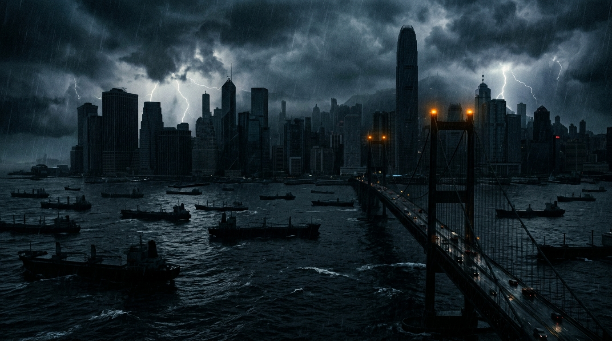
4. Cold Open: Synchronized Metropolitan Blackout
Tokyo ICU pediatric flatline at 23:11:11 UTC triggers a worldwide chain reaction across Silicon Valley, the Red Sea, and Vidarbha as Mother Earth holds her breath.
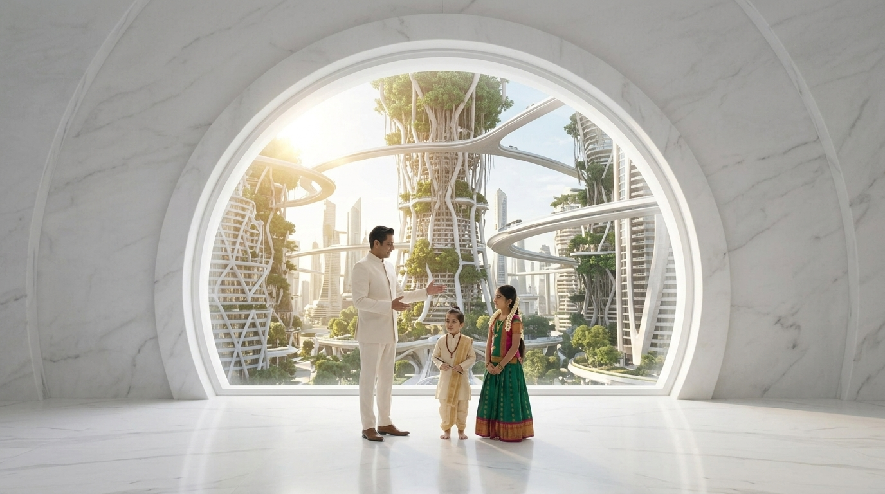
5. The Breakout: Zooming Out to the White Stage
Camera pull-back through the white aperture, where the acting human bird (Jivatma) finally looks up and meets the Witness bird (Paramatma) face-to-face.
How the 3 Narrators Live, Move & Pause Time Inside the Movie
🎙️ Host (@Me) — Systemic & Executive Thresholds
Appears in high-stakes human and systemic thresholds: sprinting beside Kenji in the Tokyo ICU corridor, climbing the 400kV steel pylon rung-for-rung beside lineman Arjun in Prayagraj, and bracing behind the cockpit yoke of Flight 808 in an Alpine blizzard.
🌿 Bala-Rishi (4yo, Jnana) — Cleanrooms & Time-Freeze Math
Appears when cutting through corporate and scientific illusion: jogging beside Alan Stamm in the Silicon Valley quantum vault, and tapping his neem-wood stylus to freeze 220,000°C EUV plasma explosions in mid-air to draw the 40Hz & 280-month embryological math.
🌸 Bala-Matha (4yo, Arul) — Soil, Grief & Sacred Nandri
Appears in moments of raw human grief, soil, and healing: walking barefoot and kneeling in the cracked Vidarbha mud beside farmer Ramesh and Vishan Davana, pausing time to touch a father's suspended tear, and offering 100% Nandri to every worker of the old world.
Cold Open: The Sprint & Bullet-Time Spark
As Kenji sprints with Maya's crash cart, Host @Me sprints right beside him. When the defibrillator fires at 23:11:11 UTC, TIME PAUSES: the blue spark and Kenji's tear freeze in mid-air as @Me, Bala-Rishi, and Bala-Matha walk between the frozen doctors to reveal the Two Birds of the Upanishad.
Act I: In-Scene Blocking Across 4 Crises
Through the White Wall Zoom Portal, the 3 Narrators match the physical motion of the 5 Architects across Silicon Valley, the Red Sea typhoon, the Prayagraj 400kV grid, and Vidarbha's monsoon fields—narrating what the characters cannot see when they are silent.
Act II: Time-Pause Deep Dives & The Great Sync
Bala-Rishi freezes EUV tin-plasma explosions and trading floor margin calls in mid-air to expose the 57-organ autoimmune fallacy and Pitru Loka debt clock, while Bala-Matha's Nandri inspires the 5 Architects to surrender their silos into the 40Hz planetary heartbeat.
Act III: Breakout & 2050 Singularity
When the characters finally look up and see the Witness Narrators walking beside them, all sorrow dissolves. The White Wall opens into the 360° Living Honeycomb City of 2050—magnetic levitation skyways, perpetual self-powering homes, and ageless 528Hz frequency health.
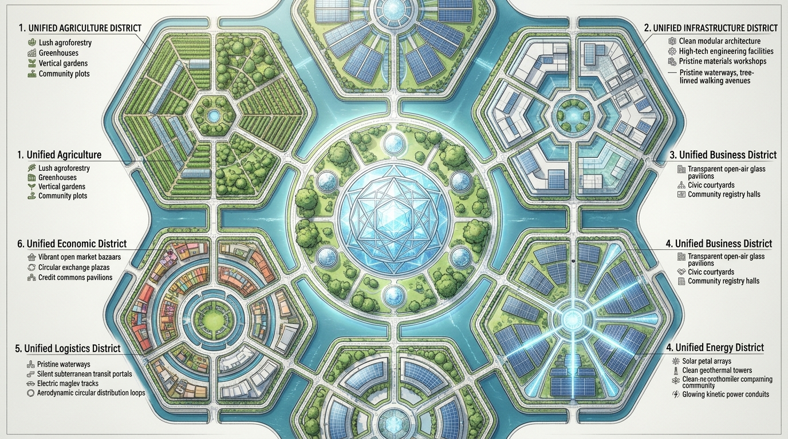
The Ideal Honeycomb City (Aerial Mandala)
Center is the Unified Soul Platform (Sanctuary of Soul), surrounded by 6 functional district petals (Agriculture, Infrastructure, Business, Energy, Logistics, Economic).
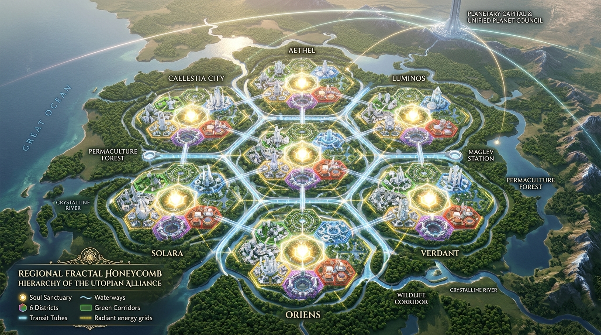
7-City Regional Fractal Cluster
7 Honeycomb cities interconnected by frictionless subterranean vacuum maglevs into 1 balanced regional organ, scaling directly to the Unified Planet Council.
Everything Researched Today is the Pilot for 2050
Old ways long gone—no asphalt, no rubber tires, no fossil smog, no utility bills, no toxic synthetic medications. All ultra-natural yet hyper-scientific.
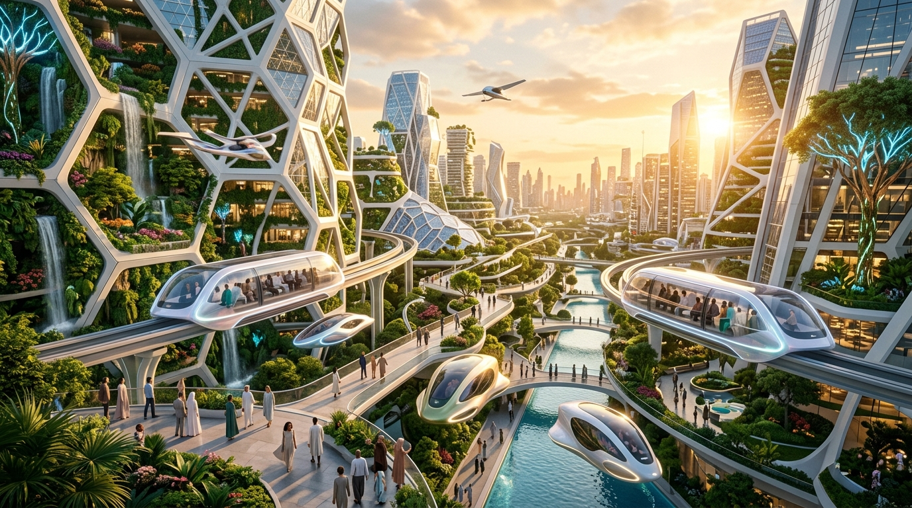
1. Magnetic Floating & Near-Flying Vehicles
Zero Asphalt, Zero Rubber Tires: Silent floating passenger pods gliding 1-3m above turf. 100% freight moved via subterranean pneumatic vacuum tubes.
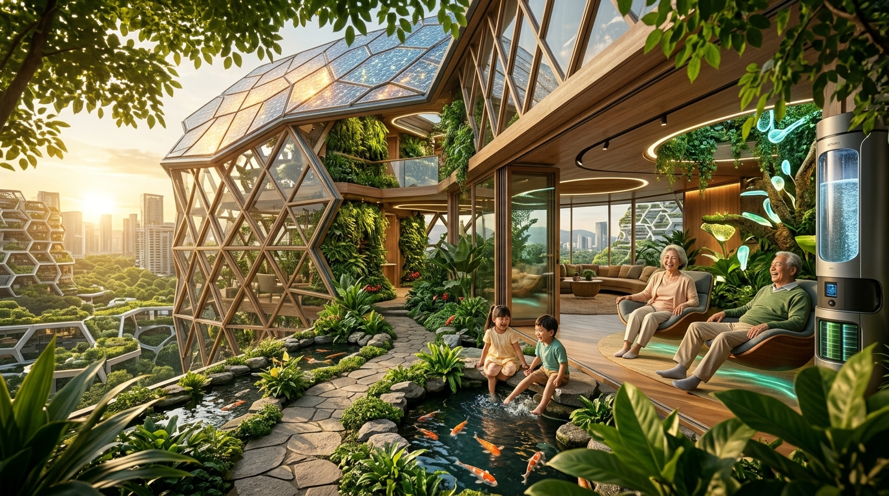
2. The Living Home That Powers Itself
Perpetual Quantum Batteries: Cycles indefinitely with zero degradation. Biomimetic solar skin generates 200% power. Pure atmospheric water condensers. Zero utility bills forever.
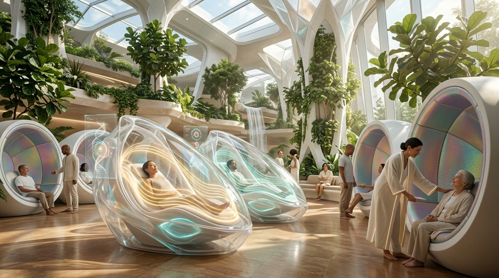
3. Frequency Healthcare: Age Does Not Age
Radiant Cellular Vitality: Cellular telomere tuning via acoustic and photonic frequencies. Microfluidic ancient Siddha botanical delivery. Illness corrected before physical manifestation.
| District Hub | Platform | Honeycomb Location | Governing Principle & Physical Function |
|---|---|---|---|
| District 7 (Center) | Unified Soul Platform (USP) | Central Hexagon (Nucleus) | Sanctuary of Conscious Stillness, 7D virtue academies, silent reflection pools, intergenerational elder council. |
| District 1 | Unified Agriculture Platform (UAP) | North-West Petal | Every farmer is an employee of the Unified Planet. Syntropic food forests, municipal composting, heirloom seeds, zero chemicals. |
| District 2 | Unified Infrastructure Platform (UIP) | North-East Petal | Hardware (heavy manufacturing/civil/silicon foundry) & Software (OS/protocols/compute infrastructure). |
| District 3 | Unified Business Platform (UBP) | East Petal | All business software registered in one place; 100% public read-only transparency for all citizens. |
| District 4 | Unified Energy Platform (UEP) | South-East Petal | Life is energy, sustenance is energy. Concentrated solar petals, deep geothermal, perpetual quantum battery vaults. |
| District 5 | Unified Logistics Platform (ULP) | South-West Petal | All forms of vascular movement. Automated maglev freight yards, subterranean pneumatic cargo tubes, floating delivery gliders. |
| District 6 | Unified Economic Platform (UEcP) | West Petal | Exchange of products for services; Unified Banking; central credit pool. Repay through duty (Seva) when ready without pressure. |